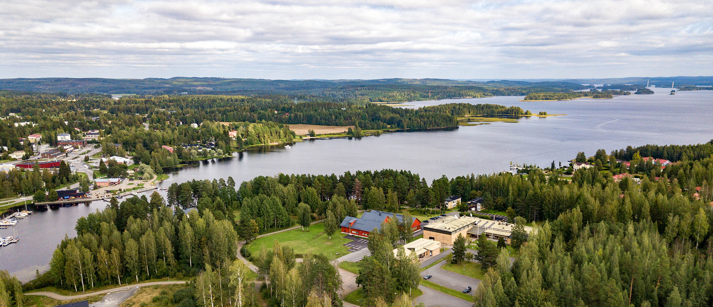

Summer Session 2025
Webbing, Winging and Weaving Economies
for Rewilding Academic and Organisational places
Location
Alkio-opisto is a folk high school located in the former Korpilahti municipality of Jyväskylä, where over 200 students study annually. Alkio-opisto is the most widely open folk high school in Finland offering university and university of applied sciences studies. The principal of Alkio-opisto is Doctor of Education Jaana Laitila.
Day 1 (July 21)
Coordinator meeting, attended by Vitalija. Arrival of participants.